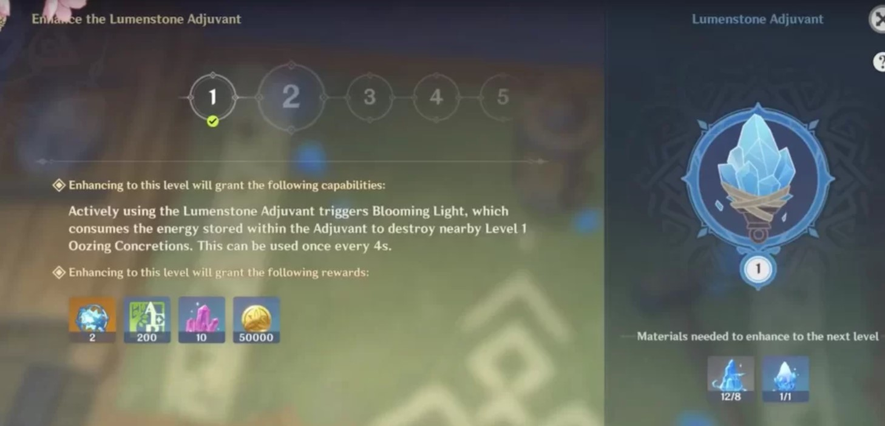
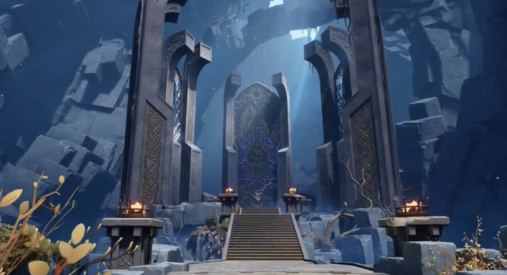
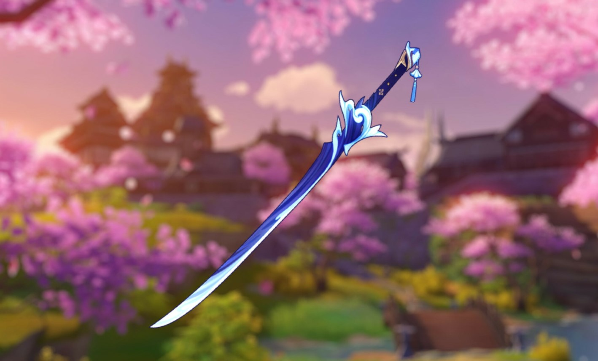
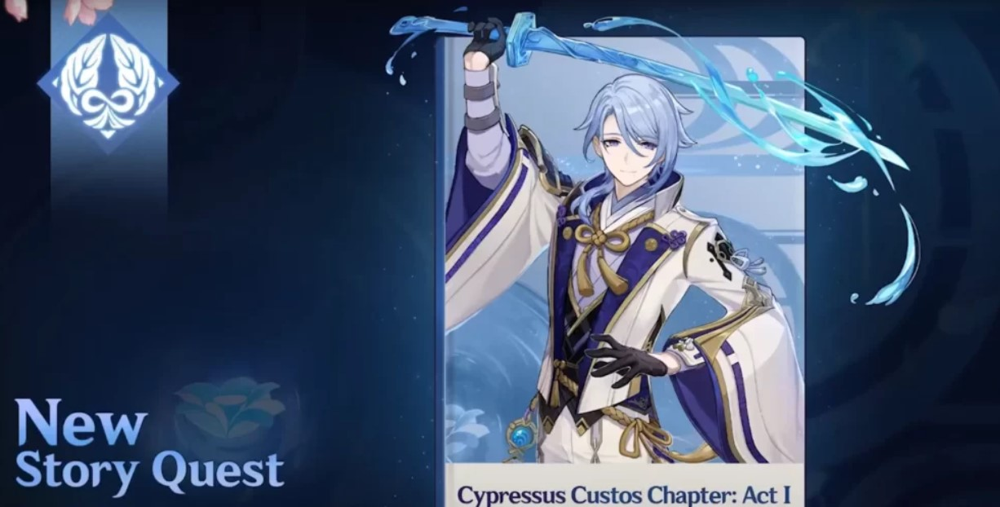
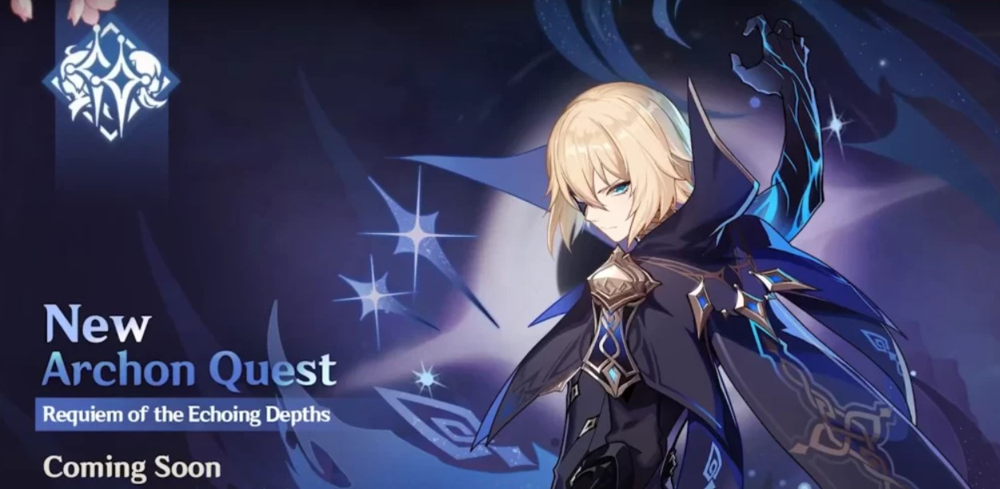
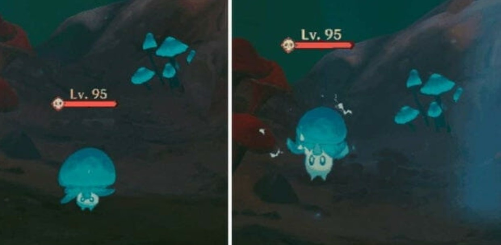
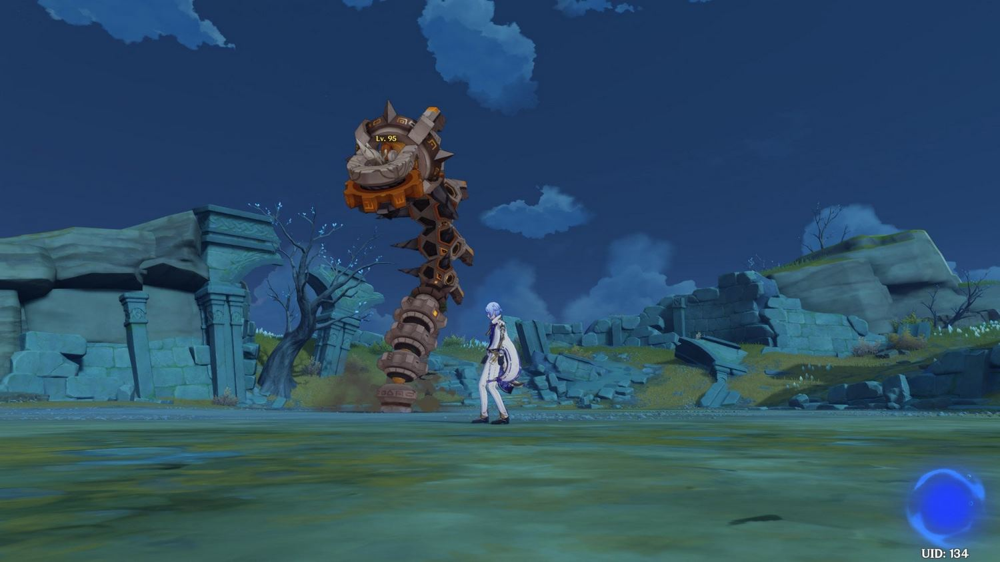

Дата выхода Genshin Impact 2.6 Появилась официальная информация о том, что релиз Genshin Impact 2.6 состоится 30 марта 2023 года. Он будет заменен следующим обновлением 10-11 мая.
В первой фазе обновления запустят баннер нового 5-звездочного персонажа – Аято Камисато, брата Аяки и главы комиссии Ясиро в Инадзуме. Он относится к Гидро стихии и использует одноручный меч. В команде этот боец сможет играть роль основного дамагера.
В первой половине апдейта также пройдет реран Анемо архонта Венти. Речь идет о 5-звездочном герое, использующем в бою лук. В последний раз его баннер крутили почти год назад. Отметим, что он неплохо играет роль поддержки или второстепенного DPS.
Во время второй фазы (должна начаться 20 апреля) разработчики проведут реран Аяки Камисато (5-звездочный Крио персонаж, орудующий одноручным мечом). К сожалению, пару ей никто не составит. В бою она способна выполнять функцию главного DPS.
Разработчики в рамках стрима наконец-то анонсировали Разлом – новый регион, который должен будет появиться в игре после выхода апдейта 2.6. Эта локация известна многим игрокам, так как ее видно на карте. Она расположена на границе между Ли Юэ и Сумеру. Инсайдеры уже показали точное местоположение данной шахты.
В игре Разлом упоминается как место, полное ценных материалов, где на протяжении многих лет процветала добыча полезных ископаемых. Но его полностью забросили после того, как территорию наводнили опасные существа.
Поверхность Разлома возникла тысячи лет назад в результате падения гигантского небесного тела. В результате каньон стал богат кристаллами глазурованного песка (Glazed Sand Crystal) – драгоценным сырьем, используемым при создании фарфора.
Подземные шахты представляют собой запутанную и сложную систему туннелей, в которой сложно ориентироваться. Она полна ресурсов и особой растительности, являющейся результатом уникальных внешних условий.
Хотя история Разлома в большинстве своем неизвестна, есть записи о том, что в ее районе много лет назад произошло грандиозное сражение между Чжун Ли и Аждахой.
Так как большую часть времени игрокам придется находиться под землей, им потребуется гаджет, чтобы освещать себе путь. Речь идет об Адъюванте светоносного камня. Вы сможете также улучшать его, как шкатулку Бокусо.
Данный данж называется «Затерянная долина». За его зачистку вы сможете получить два новых набора артефактов «Киноварное загробье» и «Отголоски подношения». Более подробная информация о них указана чуть ниже.
Разработчики добавят одноручный меч Харан Цукисиро фуцу, который окажется сигнатурным оружием для Камисато Аято. Согласно имеющимся утечкам, его базовая атака составит 46-608% (90 уровень), а дополнительной характеристикой станет шанс критического попадания, который можно будет прокачать с 7,2 до 33,1 процента.
Данный меч повышает элементальный урон на 12-24% всем участникам команды. Носитель оружия в случае попадания обычного удара по врагу другими членами отряда получает 1 уровень Волны-шипа. Каждый этот шип повышает повреждения от обычных атак на 8-16% на 8 секунд после применения стихийного умения. Максимум можно накопить 5 уровней.
Для прокачки этого оружия вам понадобятся старые (прославленные, кагэути) гарды, а также мудрость (радость, милость) наруками и смертельные статуэтки (вероятнее всего, будут выпадать с новых врагов).
Что касается новых артефактов, то «Киноварное загробье» будет давать следующие бонусы (неплохой вариант для Сяо и Ху Тао):
2 предмета: повышают силу атаки на 18%.
4 предмета: после использования взрыва стихии увеличивают силу атаки на 8%. Дают еще 10% в случае потери персонажем здоровья. Второй эффект возникает не более 4 раз за 0,8 секунды. Бонусы исчезают в случае ухода героя с поля боя.
Второй сет называется «Отголоски подношения» и имеет следующие бонусы:
2 предмета: повышают силу атаки на 18%.
4 предмета: в случае попадания по противникам обычной атакой с 36-процентной вероятностью повышает повреждения от простых ударов на 70%. Эффект пропадает через 0,5 секунды. Если бонус не активировался при первом ударе, то шанс его активации повышается еще на 20%.
Согласно имеющимся сведениям, в игру будет добавлено задание легенд Аято, а точнее первая глава его истории «Оберегающий кипарис». Как и в случае с многими другими последними миссиями персонажей, для ее открытия вам потребуются 2 ключа.
Сюжет игры будет продолжен в Разломе. Отмечается, что игроки снова повстречают таинственного Дайнслейфа. Их также ждут новые неожиданные повороты, связанные с историей близнецов. Для ознакомления с ними нужно будет пройти квест «Реквием гулких глубин».
Рыцарь Черного Змея: Разрезающий ветер Согласно имеющимся сведениям, эти враги будут иметь высокое сопротивление к Анемо урону (50%), однако при этом на них будут действовать воздушные способности. К примеру, Венти сможет притягивать их к нужному месту своим взрывом стихии.
Во время боя рыцарь сможет вызывать самонаводящиеся Анемо снаряды, выпускать части своего меча, нанося урон по площади, и наносить хлыстообразные удары своим клинком. Напомним, что апдейт должен выйти уже 30 марта текущего года.
Плавучий плесенник Гибрид слайма и призрака, способный перемещаться как по земле, так и по воздуху. Если ударить его, то он тут же рухнет вниз. Атакует врагов с помощью пузыря-ловушки. С него выпадают споры плавучего плесенника, люминесцентная пыльца и кристаллическая пыль. Не исключено, что этот моб появится лишь после добавления в игру Сумеру.
Руинный змей В рамках прямой трансляции, посвященной обновлению 2.5 для Genshin Impact, был официально представлен новый мировой босс по имени Руинный змей, представляющий собой гигантского бурового робота. Отмечается, что он появится в игре 30 марта после выхода следующего апдейта.
Отыскать этого противника можно будет в Разломе, новой локации, находящейся на краю Ли Юэ и являющейся крупнейшей шахтой региона. Инсайдеры WFP, Gi Front и BLANK разместили карту с его примерным расположением. Согласно лору, эта огромная машина пытается вырыть проход на поверхность, открыв дорогу неизвестным монстрам.
Новый фестиваль, который состоится на острове Рито (Инадзума). В его сюжете ключевую роль сыграет Аято. Он будет включать в себя немало испытаний и мини-игр, в том числе «Театр механикус». В этом событии вам удастся бесплатно получить 4-звездочного персонажа Син Цю.
В данном ивенте вы должны будете создавать разнообразные приправы, используя различные ингредиенты. Скорее всего, он будет напоминать прошедший недавно «Глоток пьянящей мечты», где вы играли роль бармена.
Речь идет о специальном подземелье, в котором вам нужно будет искать особые кристаллы. За его зачистку наградят кристаллами истока.
Вы познакомьтесь с таинственным иллюстратором, для которого вам нужно будет делать фотографии различных объектов, ориентируясь лишь на словесное описание нужных мест.